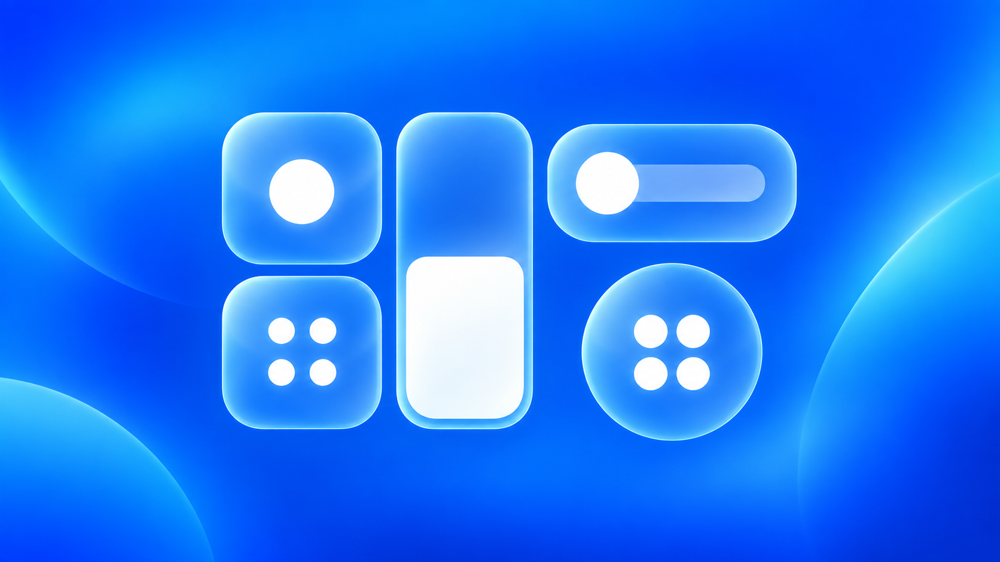
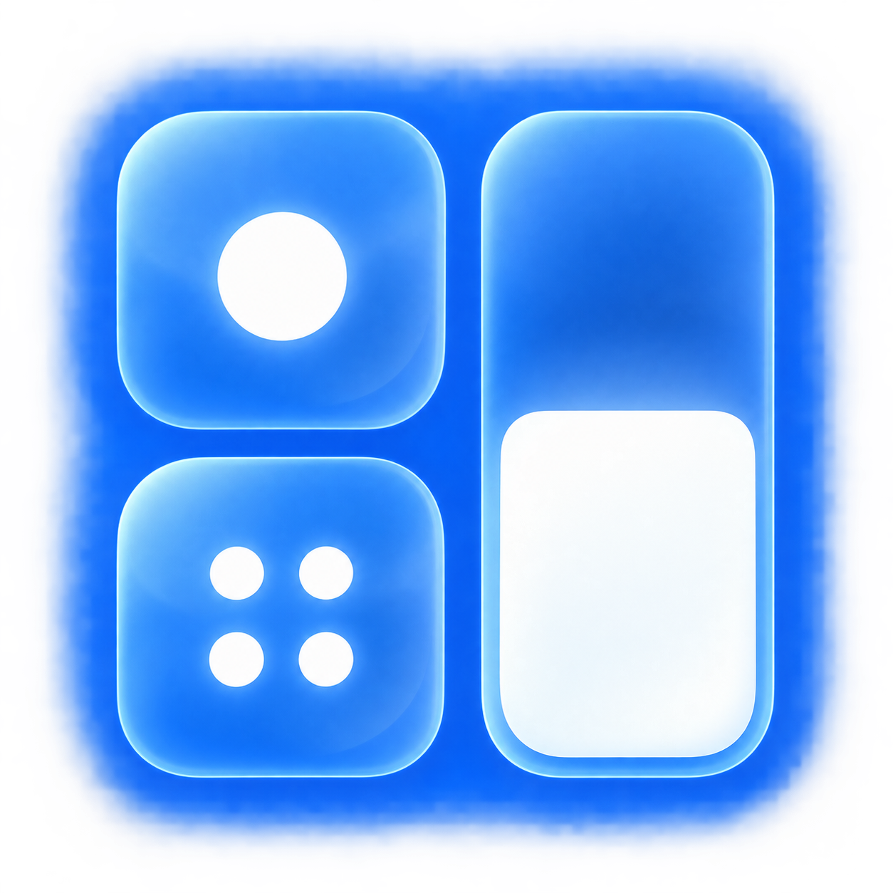

Evo Center
chatgpt5.6sol · chatgpt6.1sol · JaySuen
重新定义你的控制中心：自由调整模块布局，让常用控制更顺手。
Evo Center 是一款适用于 iOS 16.0–16.6 和 iOS 17.0–17.4 的控制中心自定义插件。在熟悉的系统交互基础上，提供更灵活的模块尺寸、更便捷的常用控制，以及可自由调整的外观。
Beta3.0 新增控制中心分页、5列显示与整体缩放，支持开关类模块启用后的图标颜色自定义，并可将HomeKit设备直接添加至控制中心。连接与Focus模块新增布局和图标排序，快捷指令支持双指令组合，播放控制支持背景着色，另有8个透明空白模块帮助实现更多布局。
从布局到操作，让控制中心更适合你的使用习惯。
分页与自由布局
将常用模块分成多个页面，左右或上下翻页。搭配5列显示、整体缩放与多种模块尺寸，让控制中心按你的习惯排列。
自定义图标颜色
为开关类模块设置启用后的图标颜色，搭配模块圆角、背景透明度与播放背景着色，打造属于你的控制中心。
HomeKit设备控制
把HomeKit设备直接加入控制中心，为常用设备选择合适的模块尺寸，让家庭控制与日常操作集中在一起。
兼容与安装
iOS 16.0 - 16.6 / iOS 17.0 - 17.4
升级保留现有设置，无需重新添加模块。已看过Beta3.0欢迎介绍的用户不会再次自动弹出；首次安装Beta3.0的用户进入控制中心添加页时仍会展示一次，之后可在控制中心自定义底部手动重新查看。
版本：Beta3.0 测试版（3.0.0-beta.3） · 分类：Tweaks
Beta3.0 兼容性更新（3.0.0-beta.3）
- 修复部分设备因缺少arm64架构导致Evo Center设置页无法加载的问题。
- Rootless和RootHide安装包补齐arm64与arm64e双架构，覆盖主插件、设置页及模块组件。
- 保留现有功能与用户设置，无需重新添加模块；已看过Beta3.0欢迎介绍的用户不会再次自动弹出。
Beta3.0 更新日志（3.0.0-beta.2）
- 新增homekit设备模块可添加至控制中心
- “连接”模块新增一个2x2尺寸样式，增加自定义图标排序
- “focus”模块新增一个2x2尺寸、一个2x1尺寸，增加自定义图标排序
- 新增控制中心分页功能，可选择左右或上下翻页
- 新增控制中心5列显示，新增控制中心整体缩放
- 新增模块启用后的图标颜色自定义（仅限开关类模块，跳转类模块没有）
- 新增“快捷指令”模块组合功能（将两个快捷指令合并为一个“开关”）
- 新增“播放控制”模块背景着色
- 解除了视频通话等场景时强制出现在最上方的”麦克风模式“”视频效果“两个模块，现可作为模块自由添加
- 新增8个“透明空白模块，帮助实现控制中心更多种布局的可能性
- 修复已删除的快捷指令仍出现在可添加模块列表和组合选择列表中的问题。
- 修复了几个bug，新增了无数bug
Beta 2.5 更新日志
- 修复快捷指令和专注模式模块不可用的 bug。
- 修复播放控制模块 4×2 尺寸专辑封面模糊的 bug；适当优化所有播放控制模块从展开视图返回紧凑视图动画过程中的黑影，但尚未完全解决。
- 优化 iOS 17.1 及以上系统播放控制模块紧凑视图出现收藏按钮的问题。
- 修复 iOS 17 静音模块打开时副标题乱码的 bug。
- 优化音量和亮度模块的着色逻辑。
- 新增音量、亮度模块百分比显示；开关位于两个模块的尺寸选择页面，图标着色开关也一并移动至尺寸选择页面。
- 新增截屏、清角标、自动亮度三个模块。
Beta 2.0 更新日志
- 重写了音乐模块，bug相比之前少很多。移除了4x4、4x6两个不常用的大尺寸，新增了一个不同样式的4x2尺寸。
- 完善了连接模块的所有尺寸显示问题。
- 音量、亮度模块新增：竖向1x1和横向2x1、3x1、4x1尺寸。
- 新增专注模式独立模块。现用户设置的所有专注模式可在控制中心作为模块添加，方便快速启用自己的常用专注模式。
- Focus模块新增了一个2x2尺寸。支持同时显示最多4个专注模式按钮；移除了1x1尺寸。
- 优化了模块圆角实现方式。
反馈与建议
反馈 Bug 和建议：在酷安 App 搜索用户名 JAYSuen 私信，或搜索插件名称 Evo Center，找到最新帖子评论。反馈时建议注明系统版本、插件版本、复现步骤，并附截图或崩溃日志。
酷安官网
致谢
向 ccborder16、horizontalsliders、bettercc 致敬，感谢它们在控制中心布局与美化方面的探索，为 Evo Center 的设计与实现提供了宝贵启发。